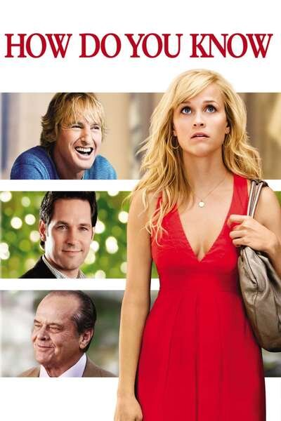

საიდან იცით?
How Do You Know?

- IMDb: 5.4
- გამოშვების წელი: 2010
- ქვეყანა:
- ჟანრი: ფილმი, დრამა, კომედია, მელოდრამა
- ხანგძლივობა:
- რეჟისორი: ჯეიმს ლ ბრუქსი
- მსახიობები: ჯეკ ნიკოლსონი, პოლ რუდი, რიზ უიზერსპუნი, კეტრინ ჰანი, ოუენ უილსონი, ენდრიუ ვილსონი, იუკი მაციზაკი, შელლი კონნი
სიყვარულის სამკუთხედის ისტორია, სადაც ”თეთრი საყელო” ჯორჯი ეჯიბრება ბეისბოლისტ მანს, რომ მოიპოვოს ახალგაზრდა ბეისბოლისტის ლიზას გული.